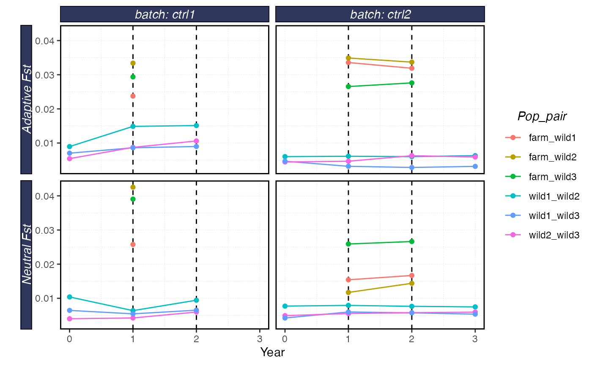

The shellfishrisks model can be run using inputs from a control file. Users may wish to run many different control file configurations.
To facilitate this, users can use the function shellfishrisks::run_ctrl_folder to automatically run each of the control files located inside a specified folder, in parallel if desired.
This example walk through how to do that.
First, we will copy a default folder with two different control files into our working directory. Users can of course create these themselves. The default control file can be created using shellfishrisks::generate_ctrl_file()
library(shellfishrisks)
# copies a default batch of control files into a new folder called ctrl_files
shellfishrisks::load_shellfish()
#> shellfishrisks is using Conda environment r-reticulate
dir.create("ctrl_files")
#> Warning in dir.create("ctrl_files"): 'ctrl_files' already exists
file.copy(
list.files(system.file("ctrl_files", package = "shellfishrisks"), full.names = TRUE),
to = "ctrl_files",
overwrite = TRUE,
recursive = TRUE
)
#> [1] TRUE TRUENow that we have a set of control files inside a folder called ctrl_files, we can run all those control files in parallel on two cores. We simply tell the function where the folder containing the control files is located, and the number of cores we wish to run the different control files on. Setting cores to 1 means each control file will be run sequentially. Setting it to more than 1 will spread the model for each control file out over the specified number of cores. SO, if there are two control files and two cores, each control file will run parallel to the other.
Note that an individual control file can still take many hours to run. YOu can determine how many cores you have available by running
parallel::detectC ores()
I would recommend at least at first not running more than half your available cores.
batches <- shellfishrisks::run_ctrl_folder(ctrl_folder = "ctrl_files", cores = 2)From there the results are stored in the resulting batch folders. The batch names are returned by run_ctrl_folder, which we can then pass to serve_shellfish along with the path to the results folder
batches <- gsub("\\.csv","",list.files("ctrl_files"))
results <- serve_shellfish(batches =batches ,
results_dir = "results") # read the results stored in .txt files into a list object
results$survival
#> # A tibble: 22 x 6
#> # Groups: batch, coreid, Rep [2]
#> batch coreid Rep age survival survivorship
#> <chr> <int> <int> <dbl> <dbl> <dbl>
#> 1 ctrl1 1 0 0 0.523 1
#> 2 ctrl1 1 0 1 0.394 0.523
#> 3 ctrl1 1 0 2 0.0506 0.206
#> 4 ctrl1 1 0 3 0.736 0.0104
#> 5 ctrl1 1 0 4 0.652 0.00769
#> 6 ctrl1 1 0 5 0.667 0.00501
#> 7 ctrl1 1 0 6 0.686 0.00334
#> 8 ctrl1 1 0 7 0.53 0.00229
#> 9 ctrl1 1 0 8 0.761 0.00121
#> 10 ctrl1 1 0 9 0.213 0.000925
#> # ... with 12 more rows
plot_shellfish(results, type = "rvars")
plot_shellfish(results, type = "fst")
plot_shellfish(results, type = "popsize")